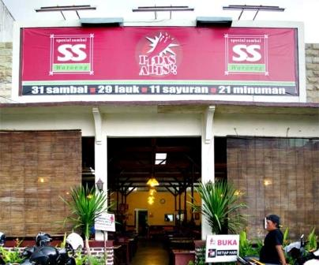
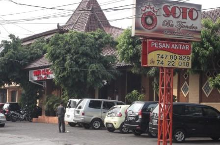

Daftar Wisata Kuliner Kota Depok
Sop Duren Margonda

Buka sejak 2010, Sop Duren Margando selalu ramai pembeli. Dulu tempat berjualannya terbilang kecil tanpa area bersantap. Tapi kini pengunjung bisa menikmati sop duren di tempat.
Selengkapnya
Selengkapnya
Waroeng SS Spesial Sambal

Bagi para penggemar pedas, Warung Spesial Sambal menjadi salah satu pilihan. Selain harga yang murah, rasanya enak di lidah dan pedasnya bikin keringetan. Suasana yang cozy ditambah lagi dengan harga yang murah menjadi pilihan utama anak-anak muda dan para mahasiswa untuk menikmati aneka sambal.
Selengkapnya
Selengkapnya
Soto Bu Tjondro

Restoran Indonesia/Jawa yang menyediakan pengalaman menyantap hidangan lokal yang terbaik. Melalui komitmen dalam pengembangan manusia, pelayanan yang prima, dan penggunaan bahan-bahan terbaik pada setiap tahap pemrosesannya.
Selengkapnya
Selengkapnya